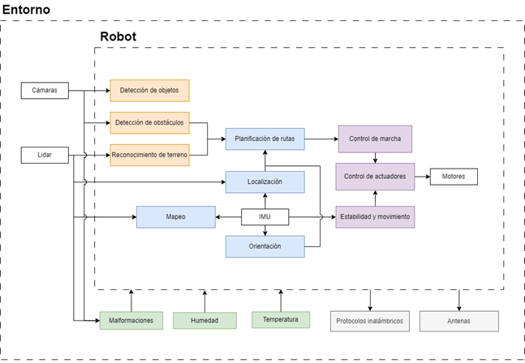

Requerimientos del Sistema
Control
Actuadores: Control de cada como que permite el movimiento del robot.
Estabilidad y movimiento: Control para mantener el equilibrio estático y en movimiento (dinámica).
Marcha: Patrón de movimiento de las patas del robot.
Percepción
Reconocimiento de terreno: Identificación de superficies, detección de irregularidades.
Detectar obstáculos: Detección de obstáculos que impidan el movimiento en la trayectoria planificada.
Detección de objetos: Detección de objetos en específico.
Navegación
Planificación de rutas: Generación de trayectoria que evite obstáculos y que minimice el uso de recursos.
Localización: Localización del robot dentro del entorno. o Orientación: Orientación del robot dentro del entorno. o Mapeo: Construcción del mapa del entorno.
Sensorización
Temperatura: Monitoreo de condiciones ambientales.
Humedad: Monitoreo de condiciones ambientales.
Malformaciones: Detectar malformaciones del entorno que si bien no afectan en la trayectoria serían importantes para reportes del terreno.
Comunicación
Protocolos inalámbricos: Comunicación que permita la transmisión de video y datos.
Antenas: Diseño que asegure la comunicación en todo momento.

Funcionalidades Necesarias del robot Prototipo Software
A. Que pueda hacer movimientos de roll pitch yaw sin desplazarse->Control
B. Detección de rango de desplazamiento -> Percepción (C)
C. Detección de obstáculos -> Percepción
D. Tenga funcionamiento de Marcha o caminata -> Control (A)
E. Mapeo del terreno (Utilización de SLAM). -> Navegación, Percepción (B)
F. El robot tenga la capacidad de desplazarse de un punto a otro solo con un mapa 2D. ->Navegación (E)
G. Funcionamiento de seguimiento a una persona -> Navegación y Percepción (B, F)
H. Que tenga funcionalidad de levantarse en caso se caiga, equilibrio. -> Control (A)